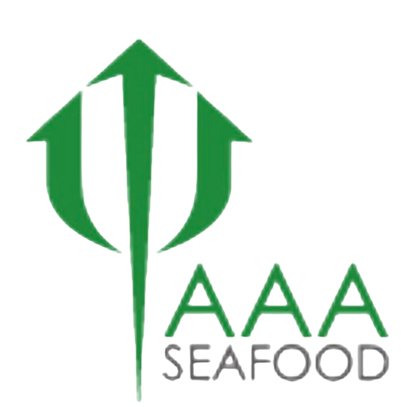
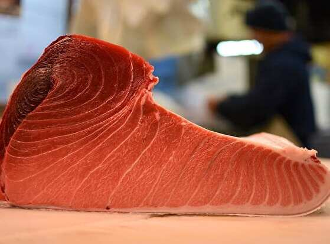
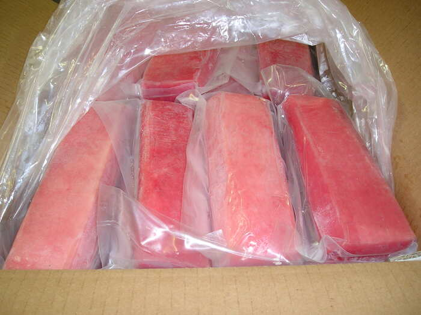
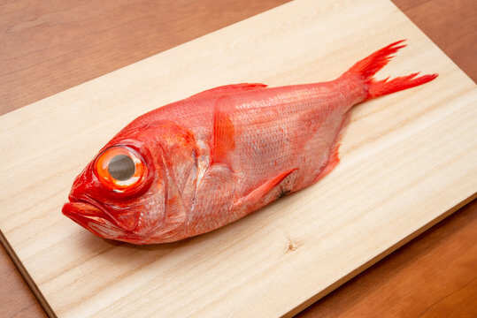
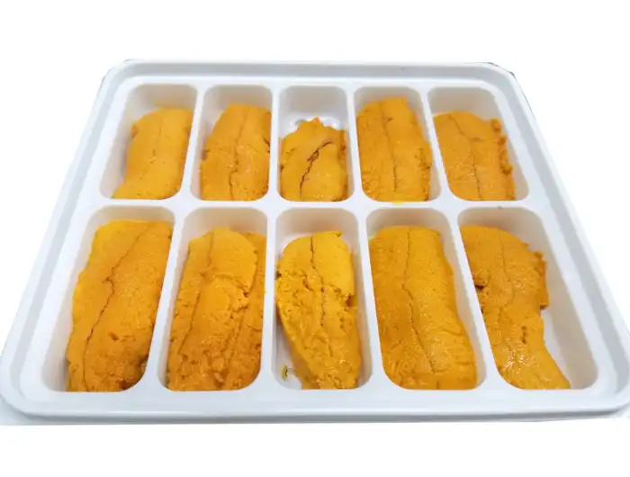
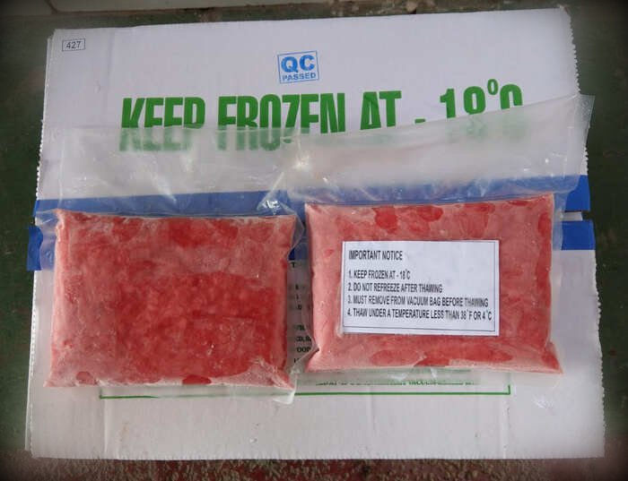
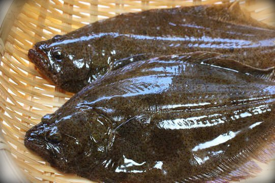

AAA INTERNATIONAL SEAFOODWHOLESALE SEAFOOD DISTRIBUTORCold-chain protocols from dock to delivery.
LA, San Diego & Inland Empire routes.
323-582-8003 — real people, fast quotes.
A sampling of the dock-fresh, sushi-grade seafood we deliver daily. See the full catalog on our Products page.






Speak with our sales team to set up delivery for your restaurant, market, or business.